考虑到深度学习训练过程都有一套约定成俗的流程，鄙人借鉴Keras开发了一套基础训练库： Pytorch-Base-Trainer(PBT)； 这是一个基于Pytorch开发的基础训练库，支持以下特征：
诚然，诸多大公司已经开源基础库，如MMClassification,MMDetection等库； 但碍于这些开源库安装麻烦,依赖库多,版本差异大等问题；鄙人开发了一套比较基础的训练Pipeline： Pytorch-Base-Trainer(PBT), 基于PBT可以快速搭建自己的训练工程； 目前，基于PBT完成了通用分类库(PBTClassification),通用检测库(PBTDetection),通用语义分割库( PBTSegmentation)以及,通用姿态检测库(PBTPose)
| 通用库 | 类型 | 说明 |
|---|---|---|
| PBTClassification | 通用分类库 | 集成常用的分类模型，支持多种数据格式,样本重采样 |
| PBTDetection | 通用检测库 | 集成常用的检测类模型，如RFB,SSD和YOLOX |
| PBTSegmentation | 通用语义分割库 | 集成常用的语义分割模型，如DeepLab,UNet等 |
| PBTPose | 通用姿态检测库 | 集成常用的人体姿态估计模型,如UDP,Simple-base-line |
基于PBT框架训练的模型,已经形成了一套完整的Android端上部署流程,支持CPU和GPU
| 人体姿态估计2DPose | 人脸+人体检测 | 人像抠图 |
|---|---|---|
|
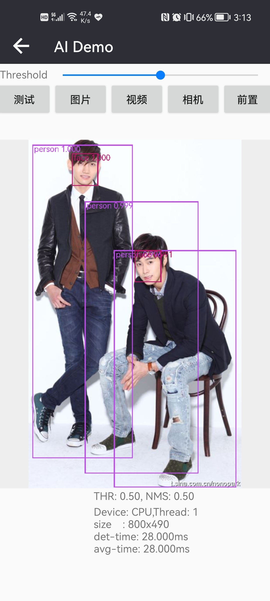 | |
| CPU/GPU:70/50ms | CPU/GPU:30/20ms | CPU/GPU:150/30ms |
PS：受商业保护,目前,仅开源Pytorch-Base-Trainer(PBT),基于PBT的分类,检测和分割以及姿态估计训练库,暂不开源。
git clone https://github.com/PanJinquan/Pytorch-Base-Trainer
cd Pytorch-Base-Trainer
bash setup.sh #pip install dist/basetrainer-*.*.*.tar.gzpip install basetrainer# Linux or macOS
python3 -m pip install --upgrade nni
# Windows
python -m pip install --upgrade nniPBT基础训练库定义了一个基类(Base),所有训练引擎(Engine)以及回调函数(Callback)都会继承基类。
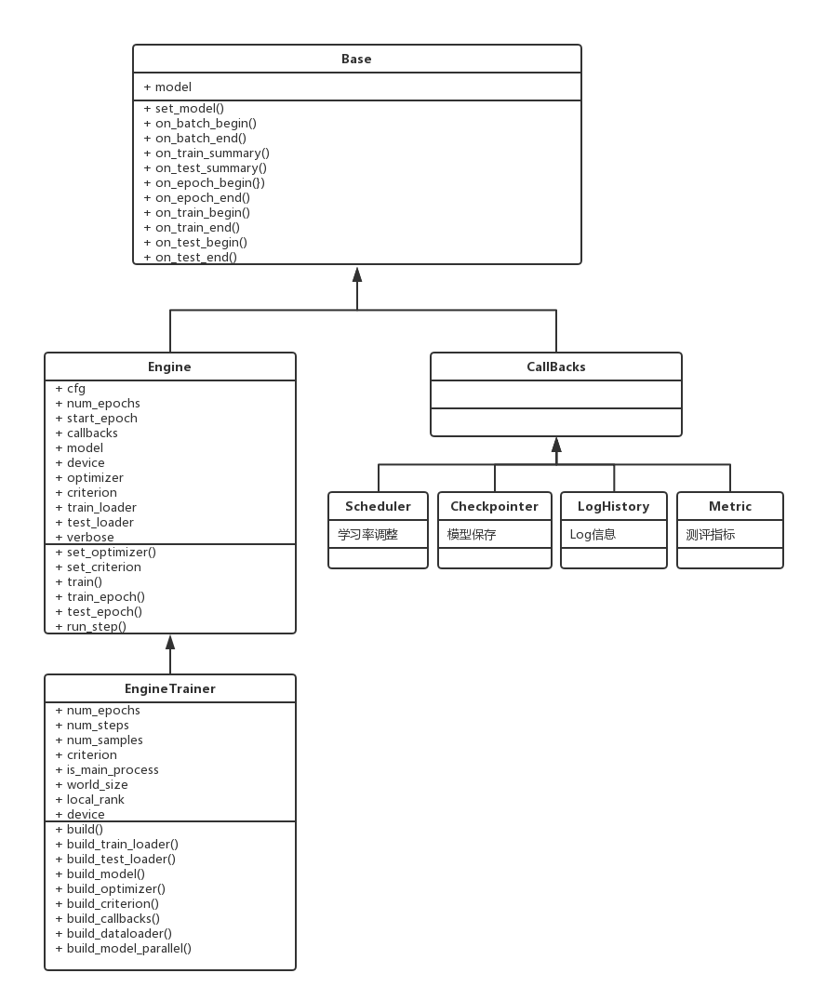
Engine类实现了训练/测试的迭代方法(如on_batch_begin,on_batch_end),其迭代过程参考如下, 用户可以根据自己的需要自定义迭代过程：
self.on_train_begin()
for epoch in range(num_epochs):
self.set_model() # 设置模型
# 开始训练
self.on_epoch_begin() # 开始每个epoch调用
for inputs in self.train_dataset:
self.on_batch_begin() # 每次迭代开始时回调
self.run_step() # 每次迭代返回outputs, losses
self.on_train_summary() # 每次迭代，训练结束时回调
self.on_batch_end() # 每次迭代结束时回调
# 开始测试
self.on_test_begin()
for inputs in self.test_dataset:
self.run_step() # 每次迭代返回outputs, losses
self.on_test_summary() # 每次迭代，测试结束时回调
self.on_test_end() # 结束测试
# 结束当前epoch
self.on_epoch_end()
self.on_train_end()EngineTrainer类继承Engine类,用户需要继承该类,并实现相关接口:
| 接口 | 说明 |
|---|---|
| build_train_loader | 定义训练数据 |
| build_test_loader | 定义测试数据 |
| build_model | 定义模型 |
| build_optimizer | 定义优化器 |
| build_criterion | 定义损失函数 |
| build_callbacks | 定义回调函数 |
另外，EngineTrainer类还是实现了两个重要的类方法(build_dataloader和build_model_parallel),用于构建分布式训练
| 类方法 | 说明 |
|---|---|
| build_dataloader | 用于构建加载方式,参数distributed设置是否使用分布式加载数据 |
| build_model_parallel | 用于构建模型,参数distributed设置是否使用分布式训练模型 |
每个回调函数都需要继承(Callback),用户在回调函数中,可实现对迭代方法输入/输出的处理,例如:
| 回调函数 | 说明 |
|---|---|
| LogHistory | Log历史记录回调函数,可使用Tensorboard可视化 |
| ModelCheckpoint | 保存模型回调函数,可选择最优模型保存 |
| LossesRecorder | 单个Loss历史记录回调函数,可计算每个epoch的平均值 |
| MultiLossesRecorder | 用于多任务Loss的历史记录回调函数 |
| AccuracyRecorder | 用于计算分类Accuracy回调函数 |
| get_scheduler | 各种学习率调整策略(MultiStepLR,CosineAnnealingLR,ExponentialLR)的回调函数 |
basetrainer使用方法可以参考example.py,构建自己的训练器,可通过如下步骤实现：
ClassificationTrainer，继承trainer.EngineTrainer
def build_train_loader(self, cfg, **kwargs):
"""定义训练数据"""
raise NotImplementedError("build_train_loader not implemented!")
def build_test_loader(self, cfg, **kwargs):
"""定义测试数据"""
raise NotImplementedError("build_test_loader not implemented!")
def build_model(self, cfg, **kwargs):
"""定于训练模型"""
raise NotImplementedError("build_model not implemented!")
def build_optimizer(self, cfg, **kwargs):
"""定义优化器"""
raise NotImplementedError("build_optimizer not implemented!")
def build_criterion(self, cfg, **kwargs):
"""定义损失函数"""
raise NotImplementedError("build_criterion not implemented!")
def build_callbacks(self, cfg, **kwargs):
"""定义回调函数"""
raise NotImplementedError("build_callbacks not implemented!")build
def __init__(self, cfg):
super(ClassificationTrainer, self).__init__(cfg)
...
self.build(cfg)
...ClassificationTrainer,并使用launch启动分布式训练def main(cfg):
t = ClassificationTrainer(cfg)
return t.run()
if __name__ == "__main__":
parser = get_parser()
args = parser.parse_args()
cfg = setup_config.parser_config(args)
launch(main,
num_gpus_per_machine=len(cfg.gpu_id),
dist_url="tcp://127.0.0.1:28661",
num_machines=1,
machine_rank=0,
distributed=cfg.distributed,
args=(cfg,))basetrainer使用方法可以参考example.py# 单进程多卡训练
python example.py --gpu_id 0 1 # 使用命令行参数
python example.py --config_file configs/config.yaml # 使用yaml配置文件
# 多进程多卡训练(分布式训练)
python example.py --config_file configs/config.yaml --distributed # 使用yaml配置文件| 参数 | 类型 | 参考值 | 说明 |
|---|---|---|---|
| train_data | str, list | - | 训练数据文件，可支持多个文件 |
| test_data | str, list | - | 测试数据文件，可支持多个文件 |
| work_dir | str | work_space | 训练输出工作空间 |
| net_type | str | resnet18 | backbone类型,{resnet,resnest,mobilenet_v2,...} |
| input_size | list | [128,128] | 模型输入大小[W,H] |
| batch_size | int | 32 | batch size |
| lr | float | 0.1 | 初始学习率大小 |
| optim_type | str | SGD | 优化器，{SGD,Adam} |
| loss_type | str | CELoss | 损失函数 |
| scheduler | str | multi-step | 学习率调整策略，{multi-step,cosine} |
| milestones | list | [30,80,100] | 降低学习率的节点，仅仅scheduler=multi-step有效 |
| momentum | float | 0.9 | SGD动量因子 |
| num_epochs | int | 120 | 循环训练的次数 |
| num_warn_up | int | 3 | warn_up的次数 |
| num_workers | int | 12 | DataLoader开启线程数 |
| weight_decay | float | 5e-4 | 权重衰减系数 |
| gpu_id | list | [ 0 ] | 指定训练的GPU卡号，可指定多个 |
| log_freq | in | 20 | 显示LOG信息的频率 |
| finetune | str | model.pth | finetune的模型 |
| use_prune | bool | True | 是否进行模型剪枝 |
| progress | bool | True | 是否显示进度条 |
| distributed | bool | False | 是否使用分布式训练 |
| scheduler | 说明 | lr-epoch曲线图 |
|---|---|---|
| multi_step | 阶梯学习率调整策略 | 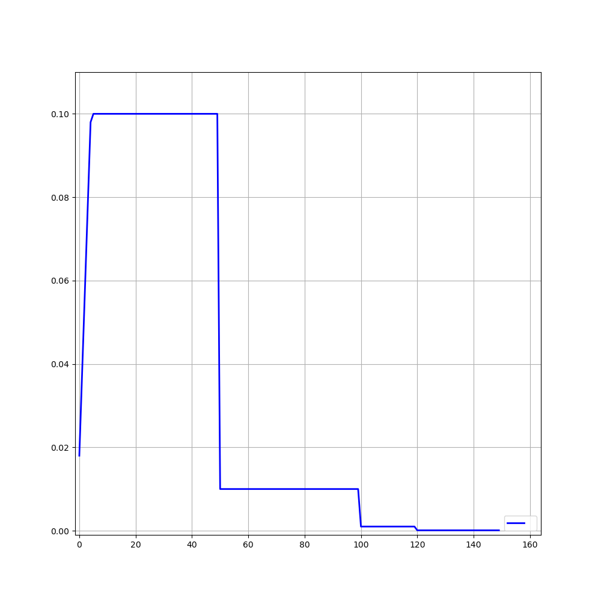 |
| cosine | 余弦退火学习率调整策略 | 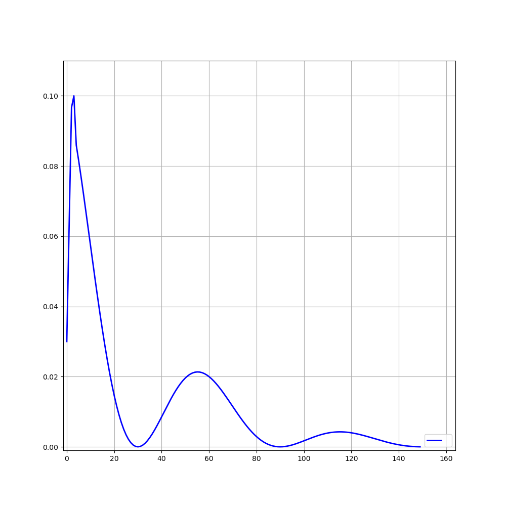 |
| ExpLR | 指数衰减学习率调整策略 | 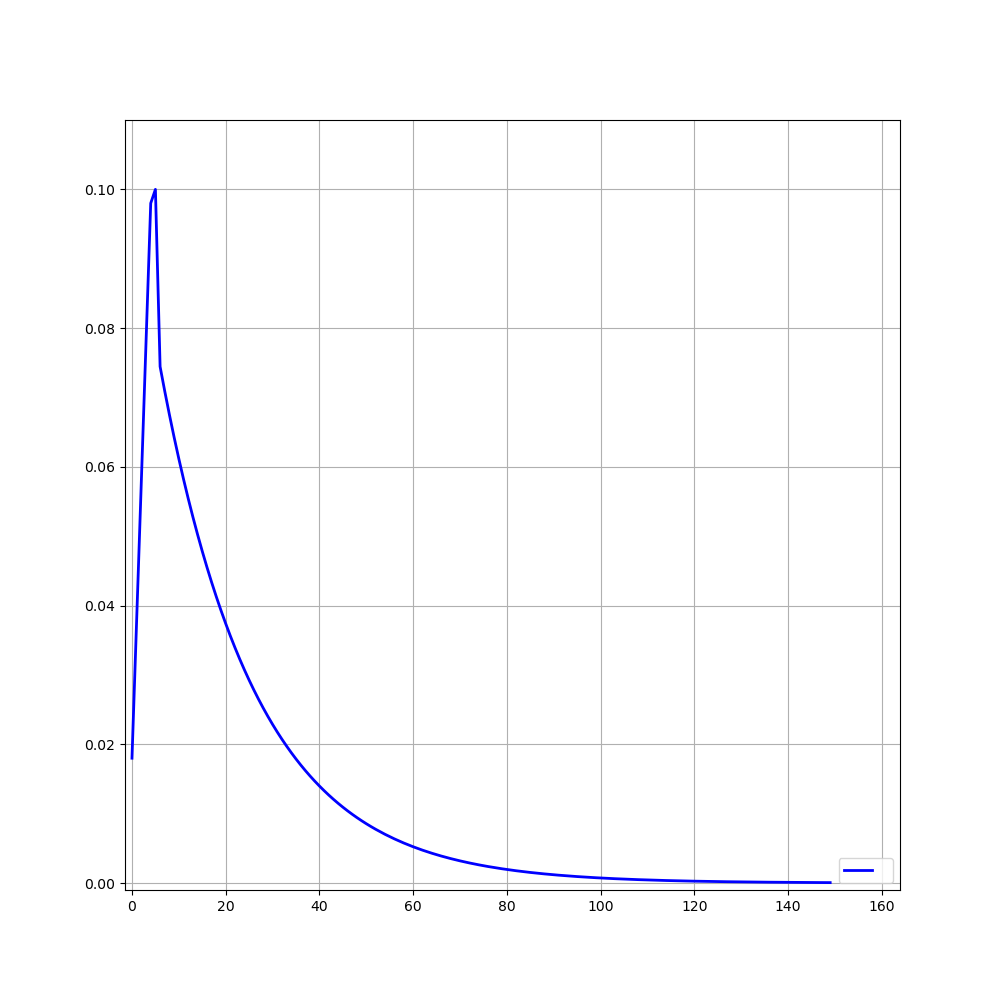 |
| LambdaLR | Lambda学习率调整策略 | 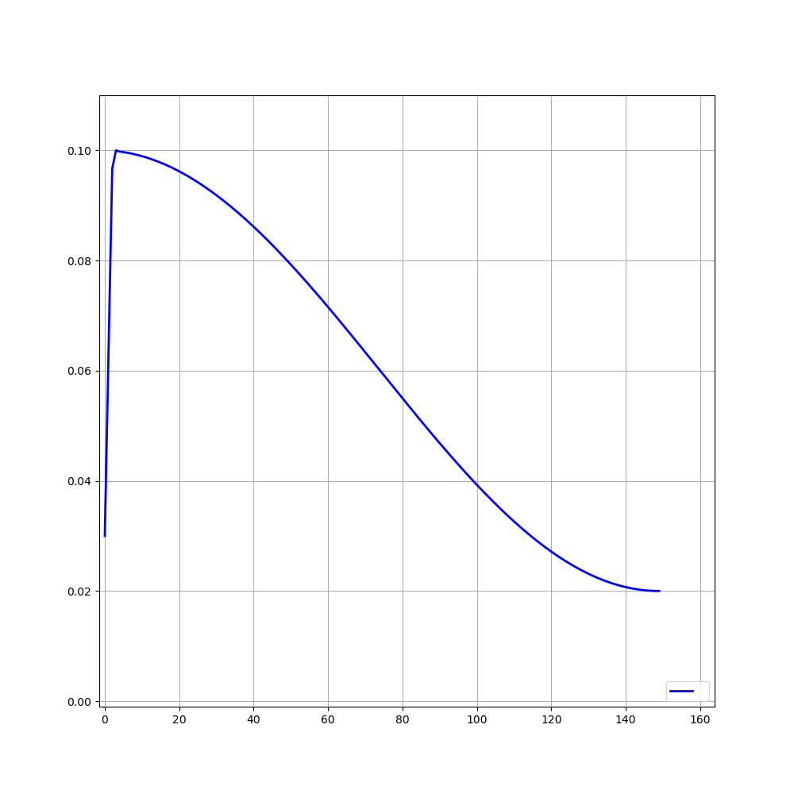 |
目前训练过程可视化工具是使用Tensorboard，使用方法：
tensorboard --logdir=path/to/log/| 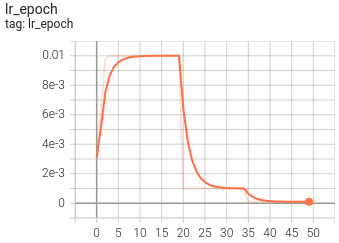 | 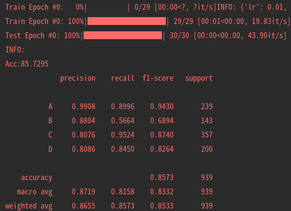 |
|---|---|
| 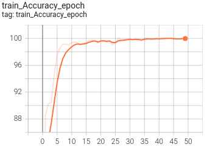 | 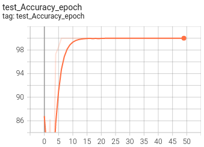 |
| 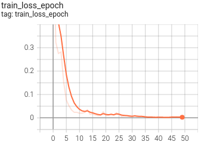 | 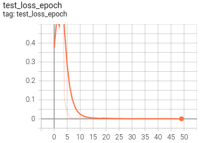 |
| 作者 | PKing |
|---|---|
| 联系方式 | pan_jinquan@163.com |